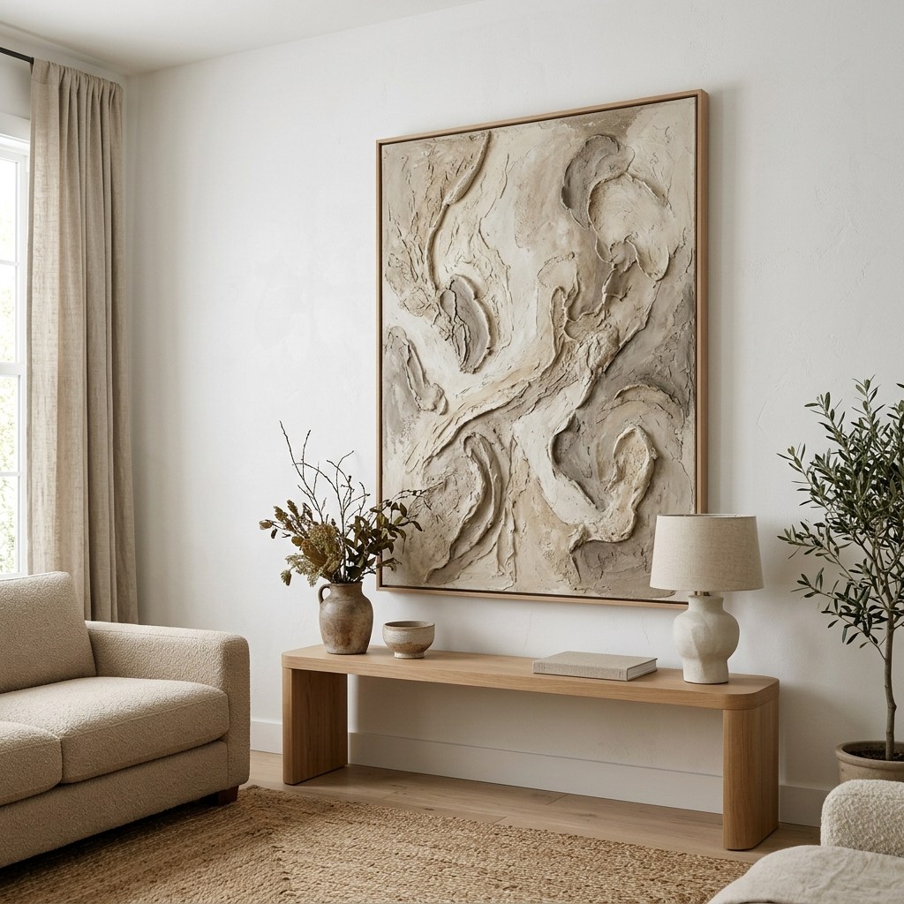
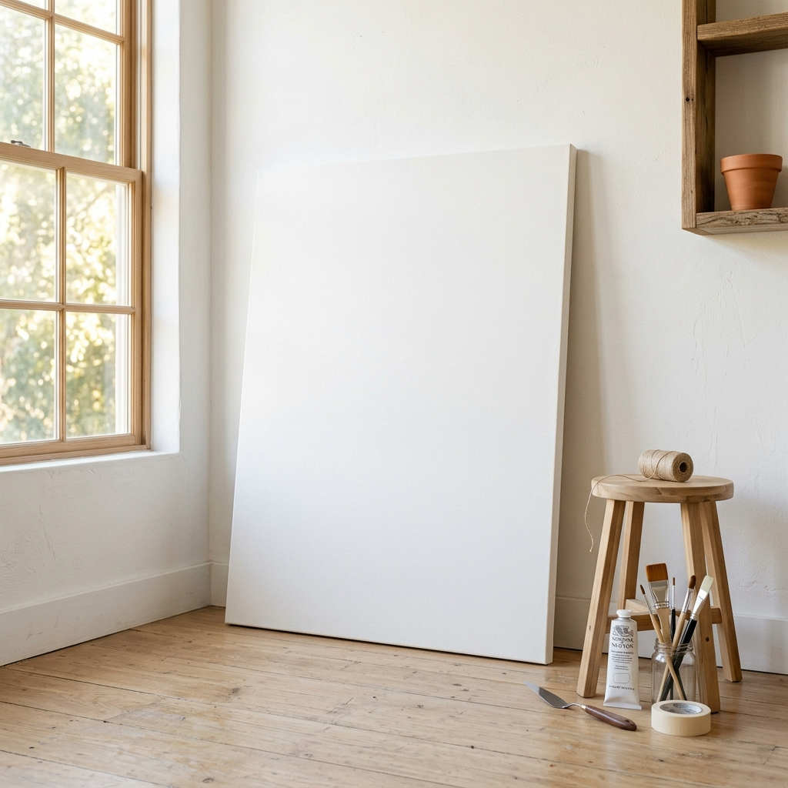
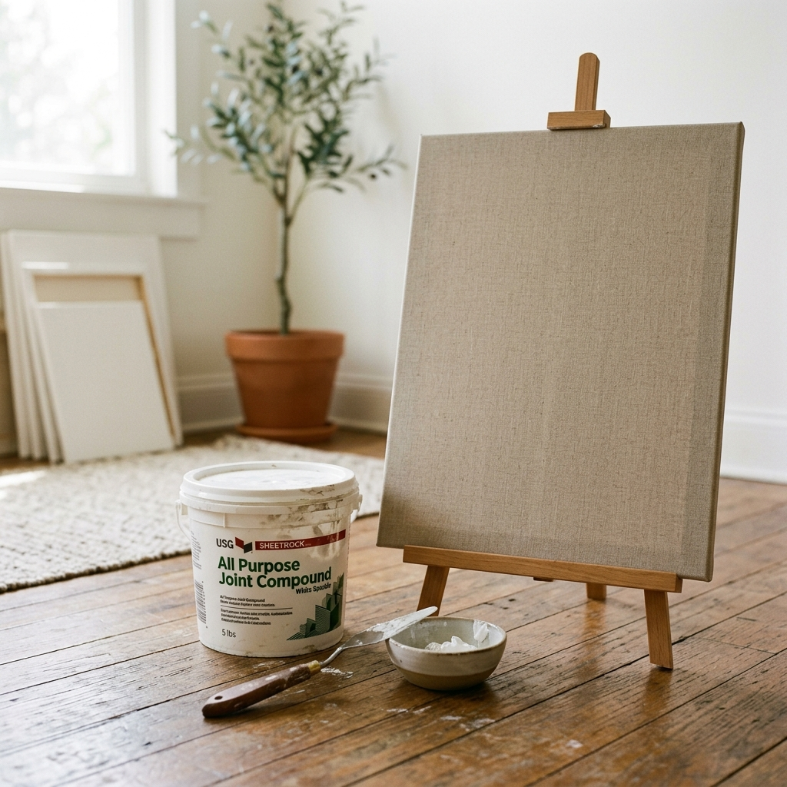
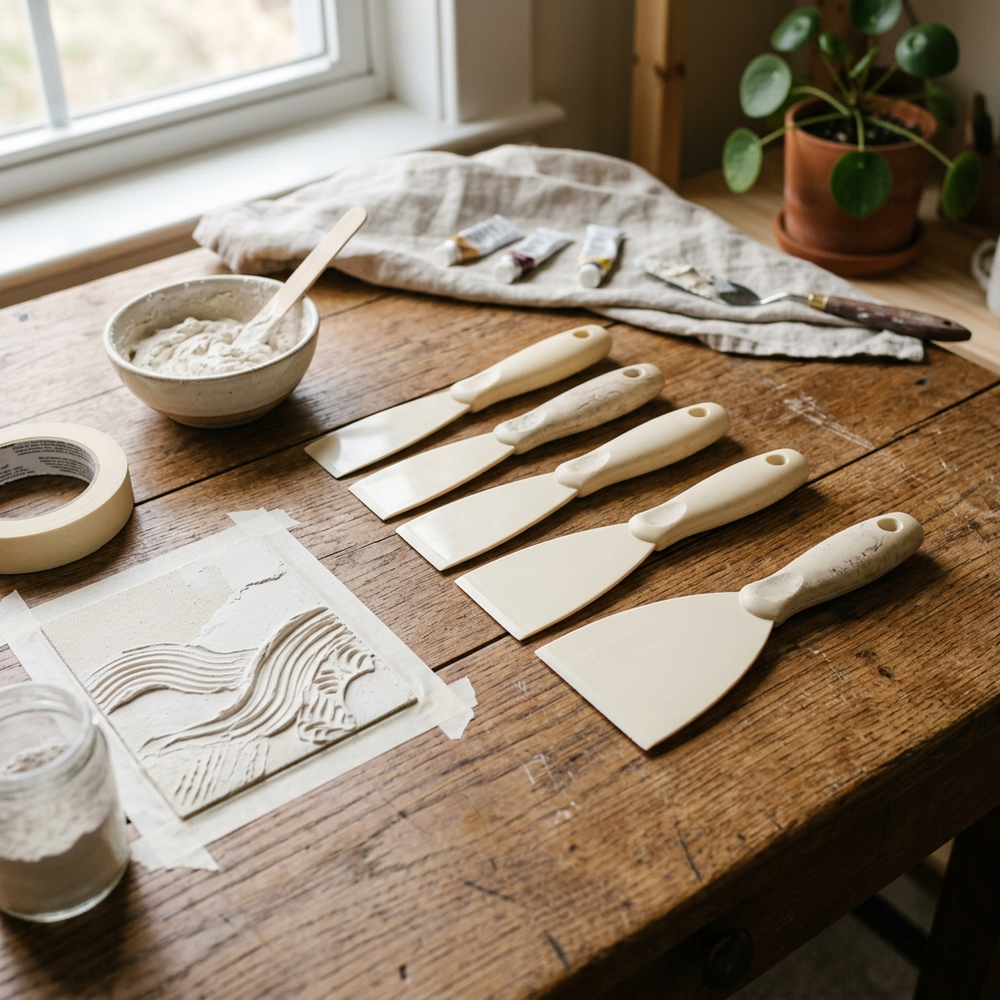
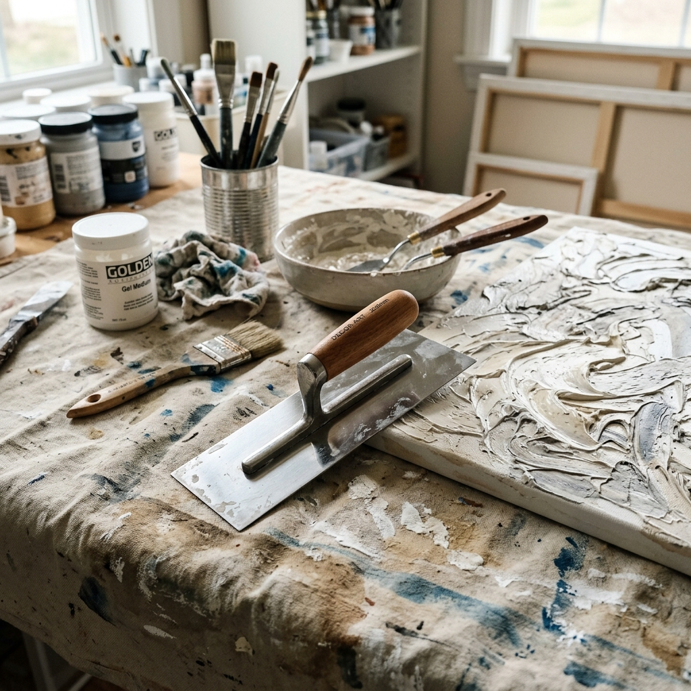
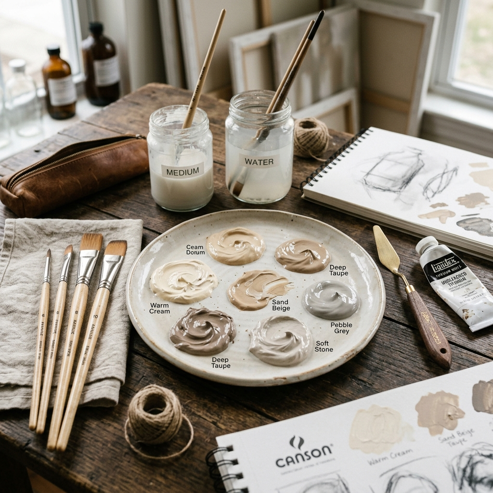
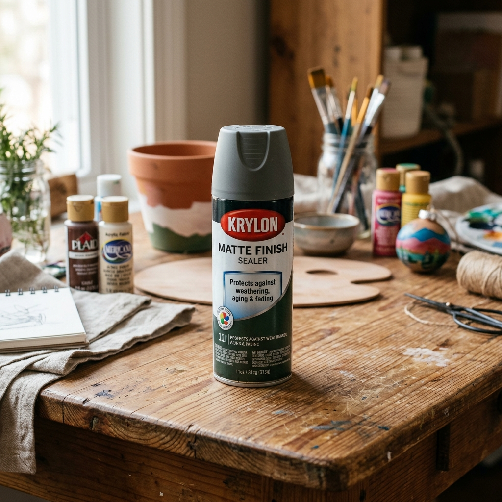
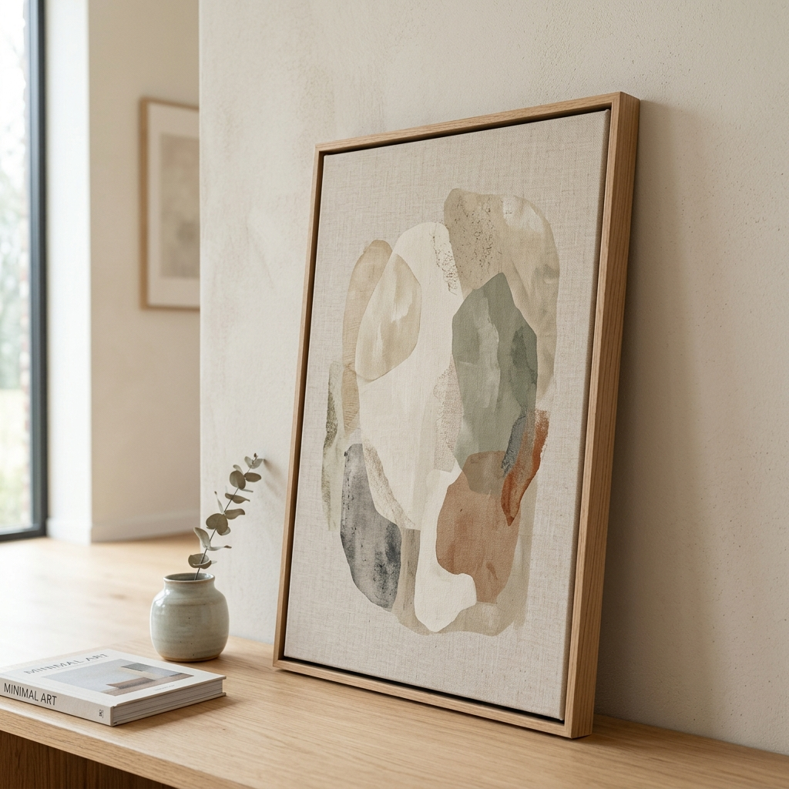

How to Make High-End DIY Textured Canvas Art (For Under $50)
Learn how to create gorgeous, high-end minimalist textured canvas art on a budget using joint compound. A step-by-step DIY guide for expensive-looking home decor.
Let me guess: you are currently staring at a giant, blank wall in your living room. You know it needs something, but every time you go online to shop for large-scale minimalist art, the price tags make you want to close your laptop and take a nap.
I get it. A beautiful, heavily textured 24x36 abstract canvas can easily cost upwards of $500 to $1,000 at high-end home decor stores. It's beautiful, but for most of us, spending that much on a single piece of decor just isn't realistic.
But what if I told you that you could make that exact same piece of art—with all the gorgeous, tactile texture and high-end vibe—for less than $50 in a single afternoon?
Welcome to the world of DIY plaster art. It is, without a doubt, my absolute favorite budget decor hack of all time. You do not need to be an artist. You do not need a steady hand. In fact, the messier and more organic you are with this project, the better the final result looks. Let's dive into the ultimate step-by-step guide to creating your own expensive-looking DIY textured canvas art.

Why Textured Art is Taking Over Interior Design
If you scroll through Pinterest or open any modern interior design magazine, you will notice a massive shift. We are moving away from loud, chaotic gallery walls filled with 20 different tiny frames. Instead, the focus is on oversized, singular pieces that command attention without shouting.
This trend is deeply rooted in the wabi-sabi aesthetic—finding beauty in imperfection, organic shapes, and natural materials. A textured canvas adds depth, movement, and a tactile quality to a room that a flat, printed poster simply cannot achieve. It catches the natural light from your windows, creating beautiful, shifting shadows throughout the day.
THE BEST PART
When you make it yourself, it is 100% unique to your home. No one else in the world will have the exact same swoops, arches, and textures.
The Materials: What You Actually Need (Shop The Project)
Before we get our hands dirty, let's gather our supplies. You can find almost all of these items easily online.
Blank Large Canvas Set
You need a canvas to work on. Since the texture we are applying can get a little heavy, I recommend getting a canvas with a sturdy wooden frame. A 24x36 inch canvas is a great statement size for above a sofa or console table.

Recommended: Blank Large Canvas Set
Drywall Joint Compound (Spackle)
This is the secret sauce. Instead of buying expensive artist mediums, we are going to the drywall aisle. Standard drywall joint compound is incredibly cheap, spreads beautifully, and dries rock hard with amazing texture.

Recommended: Drywall Joint Compound or Spackle
Plastic Putty Knives
Do not use a paintbrush for this! You need plastic putty knives or scrapers to move the heavy compound around. A multi-size pack is perfect so you can experiment with different widths and sweeping motions.

Recommended: Plastic Putty Knife Scraper Set
Plaster Texture Trowel
If you want those beautiful, sweeping arches or the look of a professionally plastered Venetian wall, a metal or plastic trowel with a flat edge is highly recommended. It gives you more control than a small putty knife.

Recommended: Plaster Texture Trowel
Neutral Acrylic Paint Set
While raw, white joint compound looks beautiful on its own, adding a wash of color gives it that curated, high-end gallery feel. Pick up a set of neutral acrylics (think warm whites, taupes, beiges, and soft charcoals).

Recommended: Neutral Acrylic Paint Set
Matte Spray Sealer
Because joint compound can be slightly chalky when it dries, you must seal it. A matte spray sealer will protect your art from dust and moisture without adding an unwanted glossy shine.

Recommended: Matte Spray Sealer
Wood Floating Frame
If you want to take your DIY from "I made this in my garage" to "I bought this at a luxury boutique," you must frame it. A thin, wood floating frame elevates a canvas instantly.

Recommended: Wood Floating Frame Kit Canvas
Step-by-Step Tutorial: Creating Your Masterpiece
Step 1: Prep Your Workspace
Joint compound can get messy. Lay down a cheap plastic drop cloth or some old cardboard on your floor. Place your blank canvas flat on the surface.
Pro Tip: If your canvas feels a bit loose or flimsy, take a spray bottle and lightly mist the back of the raw canvas with water. As it dries, it will pull tight like a drum, giving you a firmer surface to work on.
Step 2: The Base Layer
Scoop a generous amount of joint compound directly out of the tub and plop it onto your canvas. Grab your widest putty knife or trowel. Start spreading the compound across the canvas like you are frosting a giant cake. Don't worry about making it perfect. In fact, leave some areas thicker than others. Let this dry completely (usually 2 to 4 hours).
Step 3: Adding the Heavy Texture
Once the base is dry, it’s time for the fun part. Apply more joint compound, but this time, be intentional with your movements.
- For an Organic, Stone Look: Use a smaller putty knife to dab the compound on, then lightly drag the flat edge over the peaks to knock them down.
- For Sweeping Arches: Load up your trowel and make large, sweeping semi-circles, overlapping them as you go across the canvas.
- For Geometric Lines: Use a plastic notched trowel and drag it straight down or across the wet compound to create perfectly parallel, ribbed lines.
If you hate what you just did, scrape it off while it's wet and start over! Once you are happy with the texture, walk away and let it dry overnight.
Step 4: Sanding (The Secret to a Refined Look)
When you come back the next day, the compound will be completely solid. You might notice some sharp peaks. Take a fine-grit sandpaper and very gently buff down the sharpest points. This softens the texture, making it look like natural, worn stone. Wipe the dust off with a dry cloth.
Step 5: Painting Your Canvas
Mix a custom neutral color using your acrylic paints. I love a warm, putty beige or a soft, moody greige. Instead of trying to paint perfectly into every single crevice, use a slightly damp brush. This creates a "color wash" effect, where the paint pools slightly darker in the deep textures and stays lighter on the raised areas. Let the paint dry.
Step 6: Seal It & Frame It
Give it two light, even coats of your matte spray sealer. The final, crucial step is inserting your dried canvas into a wood floating frame. The contrast between the rough, chaotic plaster and the clean, sharp lines of a wooden frame is what makes this project look like it costs $800. Hang it on that blank wall, step back, and admire your genius!